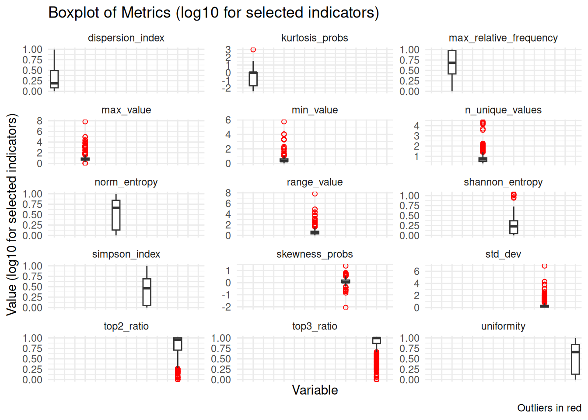
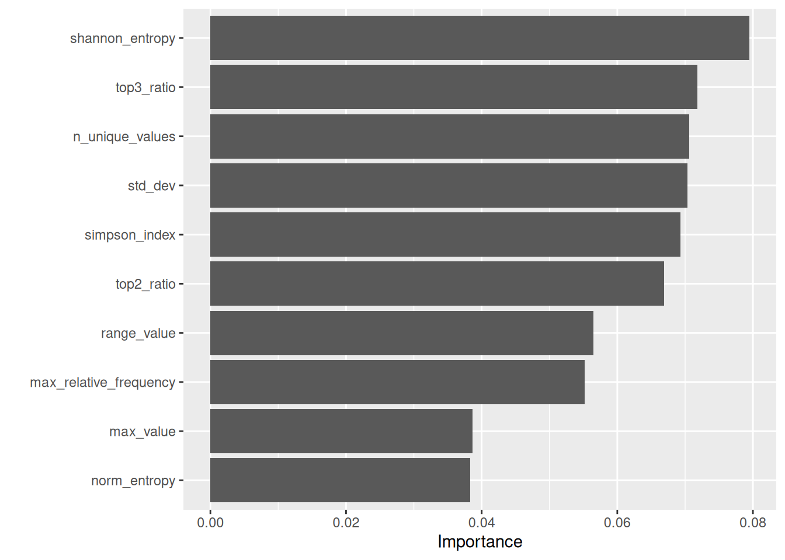
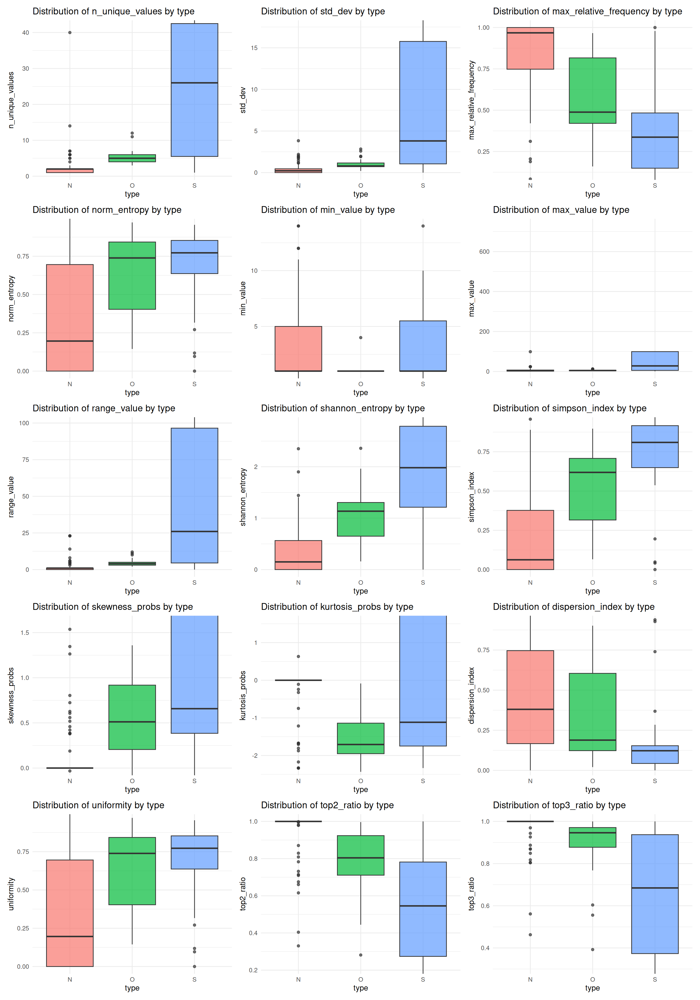

| Overview of Indicators and Missing Values | |
| Indicator | NAs |
|---|---|
| dispersion_index | 128 |
| n_unique_values | 0 |
| std_dev | 0 |
| max_relative_frequency | 0 |
| norm_entropy | 0 |
| min_value | 0 |
| max_value | 0 |
| range_value | 0 |
| shannon_entropy | 0 |
| simpson_index | 0 |
| skewness_probs | 0 |
| kurtosis_probs | 0 |
| uniformity | 0 |
| top2_ratio | 0 |
| top3_ratio | 0 |
Introduction
This document presents the model training and evaluation process carried out using Typerclass. The goal is to provide a clear overview of the methodological choices and results of the modeling process.
Key decisions in the modeling process
The model was trained following a few important choices regarding the data and the algorithm.
Dataset composition
Data from three surveys available at the Italian Istitute of Statistics (ISTAT) were combined:
The final dataset included 400 instances of class “Nominal”, 200 of class “Ordinal”, and 125 of class “Scale” (mapped in the code as N, O, and S, respectively).
Indicators
The following indicators are used in the model, along with a brief description of each:
-
n_unique_values – Number of unique values in the variable (excluding missing values).
-
std_dev – Standard deviation; measures how spread out the values are.
-
max_relative_frequency – Proportion of the most frequent value relative to the total number of observations.
-
norm_entropy – Normalized entropy; measures how evenly the values are
distributed. -
min_value – Minimum observed value.
-
max_value – Maximum observed value.
- range_value – Difference between the maximum and minimum values.
-
shannon_entropy – Shannon entropy; a measure of uncertainty or information
content. -
simpson_index – Simpson diversity index; indicates how concentrated the values are.
-
skewness_probs – Skewness of the value-probability distribution; measures
asymmetry. -
kurtosis_probs – Excess kurtosis of the value distribution; indicates tail
heaviness. -
dispersion_index – Variance-to-mean ratio of value probabilities; measures
dispersion. -
uniformity – Shannon entropy normalized by
log(n_unique_values); measures distributional evenness.
-
top2_ratio – Sum of the probabilities of the two most frequent values.
- top3_ratio – Sum of the probabilities of the three most frequent values.
The table provides an overview of all indicators used in the model. Most indicators have no missing values, ensuring reliable inputs for training. The only exception is dispersion_index, which contains 128 missing values. The ranger package can handle missing values by default; preliminary tests also showed that imputation did not improve model performance.
Indicator Distributions
This section shows the distributions of all indicators, highlighting variability and potential outliers. Several indicators display heavy tails and numerous outliers, while others (e.g., proportion-based measures) are more tightly concentrated; overall, the plots suggest substantial heterogeneity across predictors.
To improve readability, a log transformation (log10 with +1) was applied to a subset of indicators with very different scales or heavy tails. The remaining panels are shown on the original scale so that comparably scaled indicators can be interpreted directly.

Correlation matrix
The correlation matrix displays pairwise relationships between all model indicators. Several predictors show high correlations, but they were retained in the dataset because Random Forest — one of the algorithms selected for this study — is robust to multicollinearity. In fact, including correlated indicators can still improve model performance by providing additional predictive information.
| Correlation Matrix of Indicators | |||||||||||||||
| indicator | n_unique_values | std_dev | max_relative_frequency | norm_entropy | min_value | max_value | range_value | shannon_entropy | simpson_index | skewness_probs | kurtosis_probs | dispersion_index | uniformity | top2_ratio | top3_ratio |
|---|---|---|---|---|---|---|---|---|---|---|---|---|---|---|---|
| n_unique_values | 1.0 | 0.3 | −0.2 | 0.1 | 0.3 | 0.3 | 0.3 | 0.7 | 0.2 | 0.3 | 0.3 | −0.1 | 0.1 | −0.3 | −0.4 |
| std_dev | 0.3 | 1.0 | −0.1 | 0.1 | 1.0 | 1.0 | 1.0 | 0.3 | 0.1 | 0.8 | 1.0 | 0.0 | 0.1 | −0.1 | −0.2 |
| max_relative_frequency | −0.2 | −0.1 | 1.0 | −0.9 | −0.1 | −0.1 | −0.1 | −0.8 | −1.0 | −0.3 | −0.1 | 0.9 | −0.9 | 0.9 | 0.8 |
| norm_entropy | 0.1 | 0.1 | −0.9 | 1.0 | 0.1 | 0.1 | 0.1 | 0.6 | 0.9 | 0.1 | 0.0 | −1.0 | 1.0 | −0.6 | −0.5 |
| min_value | 0.3 | 1.0 | −0.1 | 0.1 | 1.0 | 1.0 | 1.0 | 0.3 | 0.1 | 0.8 | 1.0 | −0.1 | 0.1 | −0.1 | −0.2 |
| max_value | 0.3 | 1.0 | −0.1 | 0.1 | 1.0 | 1.0 | 1.0 | 0.3 | 0.1 | 0.8 | 1.0 | 0.0 | 0.1 | −0.1 | −0.2 |
| range_value | 0.3 | 1.0 | −0.1 | 0.1 | 1.0 | 1.0 | 1.0 | 0.3 | 0.1 | 0.8 | 1.0 | 0.0 | 0.1 | −0.1 | −0.2 |
| shannon_entropy | 0.7 | 0.3 | −0.8 | 0.6 | 0.3 | 0.3 | 0.3 | 1.0 | 0.8 | 0.5 | 0.3 | −0.5 | 0.6 | −0.9 | −0.9 |
| simpson_index | 0.2 | 0.1 | −1.0 | 0.9 | 0.1 | 0.1 | 0.1 | 0.8 | 1.0 | 0.3 | 0.1 | −0.9 | 0.9 | −0.8 | −0.7 |
| skewness_probs | 0.3 | 0.8 | −0.3 | 0.1 | 0.8 | 0.8 | 0.8 | 0.5 | 0.3 | 1.0 | 0.8 | −0.1 | 0.1 | −0.4 | −0.4 |
| kurtosis_probs | 0.3 | 1.0 | −0.1 | 0.0 | 1.0 | 1.0 | 1.0 | 0.3 | 0.1 | 0.8 | 1.0 | −0.1 | 0.0 | −0.2 | −0.2 |
| dispersion_index | −0.1 | 0.0 | 0.9 | −1.0 | −0.1 | 0.0 | 0.0 | −0.5 | −0.9 | −0.1 | −0.1 | 1.0 | −1.0 | 0.6 | 0.5 |
| uniformity | 0.1 | 0.1 | −0.9 | 1.0 | 0.1 | 0.1 | 0.1 | 0.6 | 0.9 | 0.1 | 0.0 | −1.0 | 1.0 | −0.6 | −0.5 |
| top2_ratio | −0.3 | −0.1 | 0.9 | −0.6 | −0.1 | −0.1 | −0.1 | −0.9 | −0.8 | −0.4 | −0.2 | 0.6 | −0.6 | 1.0 | 1.0 |
| top3_ratio | −0.4 | −0.2 | 0.8 | −0.5 | −0.2 | −0.2 | −0.2 | −0.9 | −0.7 | −0.4 | −0.2 | 0.5 | −0.5 | 1.0 | 1.0 |
Model Selection
Preprocessing Recipe
We tested a preprocessing approach using median imputation for all numeric predictors. However, preliminary tests showed no improvement in model performance, so we decided to proceed with a recipe without any imputation.
Random Forest and XGBoost were both selected and evaluated with hyperparameter tuning.
Model Specification: Random Forest
Hyperparameter Tuning for Random Forest
We selected the mtry range using the classic rule-of-thumb centered on sqrt(p), where p is the number of predictors, and expanded it by ±50% to allow slightly simpler or more complex splits.
| Best Random Forest Hyperparameters | |||
| mtry | trees | min_n | .config |
|---|---|---|---|
| 2.00 | 410.00 | 4.00 | pre0_mod06_post0 |
Model Specification: XGBoost
XGBoost was specified using a gradient-boosted tree model with tunable hyperparameters. We used the xgboost engine and set the model to classification mode to predict the three classes.
Hyperparameter Tuning for XGBoost
We tuned XGBoost using the same cross-validation folds as Random Forest. The mtry range follows the same rule-of-thumb (centered on sqrt(p)), while the other hyperparameters use typical ranges for boosted trees.
| Best XGBoost Hyperparameters | |||||||
| mtry | trees | min_n | tree_depth | learn_rate | loss_reduction | sample_size | .config |
|---|---|---|---|---|---|---|---|
| 3.000 | 889.000 | 2.000 | 6.000 | 1.674 | 3.360 | 0.921 | pre0_mod12_post0 |
Evaluation
Confusion matrix
We compare Random Forest and XGBoost on the same held-out test set. The confusion matrices are normalized by row (true class), so values represent per-class recall.
| Summary of Confusion Matrix (Per-Class Recall, %) | |||||||||
| Model | True N → Pred N | True N → Pred O | True N → Pred S | True O → Pred N | True O → Pred O | True O → Pred S | True S → Pred N | True S → Pred O | True S → Pred S |
|---|---|---|---|---|---|---|---|---|---|
| RF_tuned | 91.1 | 15.6 | 4.3 | 5.1 | 73.3 | 13.0 | 3.8 | 11.1 | 82.60870 |
| XGB_tuned | 84.3 | 10.3 | 5.3 | 7.9 | 76.9 | 15.8 | 7.9 | 12.8 | 78.94737 |
Performance metrics
The table below compares Random Forest and XGBoost on the same test set using a consistent set of metrics (accuracy, balanced accuracy, macro F1, Cohen’s Kappa, and macro ROC AUC). Hyperparameters were selected using accuracy for simplicity; we report additional metrics to assess class‑balanced performance.
| Model Comparison Metrics | |||||
| model | accuracy | bal_accuracy | f_meas | kap | roc_auc |
|---|---|---|---|---|---|
| RF_tuned | 0.84 | 0.86 | 0.81 | 0.74 | 0.93 |
| XGB_tuned | 0.82 | 0.82 | 0.77 | 0.68 | 0.90 |
| Winner | RF_tuned | RF_tuned | RF_tuned | RF_tuned | RF_tuned |
Accuracy is the overall proportion of correct predictions, while balanced accuracy averages recall across classes to reduce class-imbalance effects. Macro F1 gives equal weight to each class, Cohen’s Kappa adjusts for chance agreement, and macro ROC AUC summarizes discriminative ability across classes. Based on the average of these metrics, the best overall model is RF_tuned.
Misclassification Analysis
Misclassifications are inspected on the held-out test set to avoid optimistic bias. The tables below summarize the misclassification patterns for each model.
| Misclassification Summary (Test Set) — RF | |||
| True class | Predicted class | Count | |
|---|---|---|---|
| N | O | 7 | |
| N | S | 1 | |
| O | N | 4 | |
| O | S | 3 | |
| S | N | 3 | |
| S | O | 5 | |
| Misclassification Summary (Test Set) — XGBoost | ||
| True class | Predicted class | Count |
|---|---|---|
| N | O | 4 |
| N | S | 1 |
| O | N | 7 |
| O | S | 3 |
| S | N | 7 |
| S | O | 5 |
For RF, the most frequent error is N → O (7 cases, 23 total misclassifications). For XGBoost, the top confusion is O → N (7 cases, 27 total). These summaries highlight whether errors cluster between adjacent classes or are more diffuse; fewer and more concentrated errors generally indicate a more reliable model.
Consistent with the overall performance metrics, Random Forest remains the best-performing model and will be used for the final classifier.
Variable importance scores
This plot reports permutation importance for the Random Forest model. For each indicator, its values are randomly permuted and the resulting drop in model performance is measured; larger drops indicate more important predictors. Because several indicators are correlated (as shown in the correlation section), importance can be shared across related features, so the plot should be read as a relative ranking rather than an absolute measure of effect.

Distribution of Predictor Variables by True Class (N, O, S)
The final figure shows the distribution of predictor variables by their true class (N, O, S) on the test set, highlighting how indicator values vary across classes.
